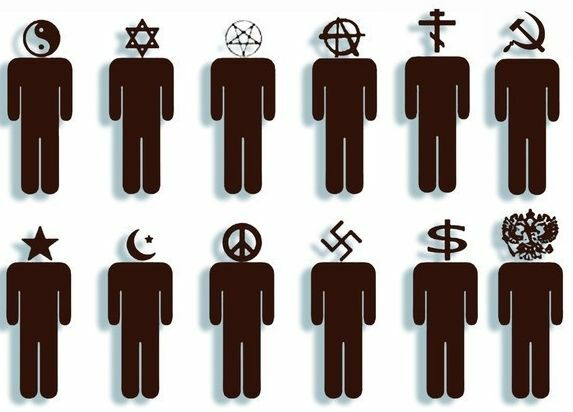

Jak człowiek podbił świat i po co to nam?
Jak to się stało, że człowiek rozumny podporządkował sobie świat?

Wszystkim paskudnego czasu!
Chciałbym zacząć od ważnego pytania, które Yuval Noah Harari stawia przed czytelnikiem w swojej książce „Homo Deus”: jak to się stało, że człowiek rozumny podporządkował sobie świat?
Pytanie wydaje się dość banalne, a autor po kilku stronach przedstawia własną wizję odpowiedzi. Od niej właśnie zaczniemy, nie wdając się, drogi czytelniku/czytelniczko, w szczegóły rozważań Yuvala na temat różnic i podobieństw między Człowiekiem a Zwierzętami.
Co dziwne, większość ludzi mieszkających w nowoczesnych miastach i korzystających z pełni przywilejów człowieka rozumnego rzadko zastanawia się nad tym, w jaki sposób zajęli tak dominującą pozycję na planecie Ziemia. Przerażające jest to, że ogromna liczba otaczających nas osobników gatunku ludzkiego wciąż poważnie traktuje nasz gatunek jako coś stworzonego przez jakąś nadprzyrodzoną istotę, która oddała nam w posiadanie miriady żywych istot oraz całą Ziemię jako pola uprawne.
Jeśli wypadliście z życia społecznego i nie wierzycie mi na słowo, otwórzcie kalendarz chrześcijański lub muzułmański i wybierzcie się podczas jednego z kolejnych świąt religijnych do lokalnego kościoła lub meczetu. Poziom ciemnoty współczesnego społeczeństwa w 2022 roku zadziwia i przeraża.
Zostawmy wierzącym ich mentalne dewiacje i perwersje. Przejdźmy do bardziej solidnych faktów.
Zatem, dlaczego człowiek rozumny stał się władcą Ziemi?
Ci, których mózg nie jest na tyle zdegenerowany, by wierzyć w boskie wybraństwo łysych małp, zazwyczaj uważają, że kluczowym czynnikiem jest inteligencja.
Cóż, to przekonanie jest już ciekawsze, jednak sam w sobie intelekt, zdaniem Harariego, nie stanowi powodu, dla którego jeden konkretny gatunek osiągnął poziom dominacji na całej planecie.

Autor słusznie zauważa, że ludzie posiadali wysoki poziom inteligencji już miliony lat temu, a także używali narzędzi. Co ciekawe, narzędziami posługują się również niektóre inne zwierzęta, które jednak, z jakiegoś powodu, nie zbudowały kompleksów rakietowych ani nie rozpoczęły wojen.
Uzasadnione spostrzeżenie autora, że człowiek pierwotny (na przykład 20 000 lat temu) dysponował bardziej rozwiniętą inteligencją oraz lepszymi umiejętnościami produkcyjnymi, całkowicie obala powszechne wyobrażenie o naszej wyższości nad innymi gatunkami jako wybitnych intelektualistów-technologów.
Jeśli macie wątpliwości, wystarczy przypomnieć sobie, że człowiek paleolityczny musiał znać dziesiątki gatunków zwierząt w swoim otoczeniu, ich zachowania i zwyczaje, setki ziół i roślin oraz ich wpływ na organizm, a także tworzyć dla siebie ubrania i narzędzia. Nie miał przecież chińskich ani indyjskich dzieci, które z radością zrobiłyby to za niego i tak dalej.
Każda niewiedza to śmierć. Bardzo surowy egzaminator.
Jak więc udało nam się wszystkich podporządkować?..
Yuval Harari odpowiada na to w następujący sposób: dzięki niezwykle elastycznej i rozwiniętej interakcji społecznej! Zdolność sapiensów do łączenia się w grupy i współpracy z wieloma osobnikami wyniosła nas na piedestał zdobywcy świata.
Mrówki i pszczoły przewyższyliśmy w interakcjach społecznych, ponieważ jako ssaki potrafiliśmy szybciej i elastyczniej dostosowywać struktury współpracy. To właśnie nasza zdolność do współdziałania z praktycznie nieograniczoną liczbą osobników naszego gatunku podarowała Ziemię na tacy rodzajowi „człowiek rozumny”.
Jak jednak przebiega taka interakcja? Co ją warunkuje i na czym się opiera?
Na to wszystko istnieje jasna i wyczerpująca odpowiedź – mit.
Możliwość myślenia abstrakcyjnego, przenosząca nas z rzeczywistego świata do świata iluzji i wymyślonych obrazów, to jedyna rzecz, która może przekroczyć nasz naturalny próg postrzegania innych osobników. Ten próg, swoją drogą, wynosi około 150 jednostek.
Byty intersubiektywne (coś poza obiektywną rzeczywistością, ale także wychodzące poza subiektywne postrzeganie jednostki) są pomostem do świata wielkich społeczności. Dobrym przykładem mogą być naród, wyznanie, etnos, ideologia.
Warto tu zauważyć, że – jak słusznie podkreśla autor – małe grupy, w przeciwieństwie do dużych, zjednoczonych bytami intersubiektywnymi, są przeważnie egalitarne.

Potwierdzają to liczne badania (na przykład Margaret Mead) antropologów dotyczące plemion zbieracko-łowieckich, gdzie myśliwi dzielili się pożywieniem ze wszystkimi członkami plemienia, ponieważ przetrwanie całej grupy zależało od współpracy w małej społeczności. Niezadowolenie jednego lub kilku członków plemienia stanowiło poważny problem, gdy grupa liczyła zaledwie kilkadziesiąt osób. Identyczne obserwacje prezentują prymatolodzy i badacze z dziedziny bio- i zoosemiotyki.
Goryle i szympansy doskonale rozumieją, gdy ktoś obok dostaje więcej jedzenia lub smaczniejszy poczęstunek (zobacz wideo o eksperymencie z dwoma szympansami, ogórkiem i winogronami).
Duże grupy ludzi rządzą się swoimi własnymi prawami rozwoju i istnienia. W ramach takich społeczności rola pojedynczego człowieka jest całkowicie zredukowana, władza nad procesem podejmowania decyzji zostaje wyalienowana, a całe życie często podporządkowane zapewnieniu istnienia samej intersubiektywnej jednostki.
Można słusznie wyciągnąć wniosek, że z punktu widzenia roli jednostki i jej znaczenia, duże wspólnoty homo sapiens są autorytarne w swojej istocie.
Myślę, że w tym miejscu zakończymy nasz przegląd tez przedstawionych przez Juvala i spróbujemy się zastanowić: po co w ogóle jest nam ta wiedza?
To niezwykle istotne informacje, które mogą radykalnie skierować nasze zasoby na walkę z prawdziwym wrogiem indywidualności i równości!..
Czyż nie jest taką złośliwą istotą naród, który wprowadza cię w byt 1/20 000 000 częścią nieznanego efemerycznego organizmu, który decyduje, jak masz żyć i jak umrzeć?
Jeśli jesteś Ukraińcem - musisz oddać życie za jakieś państwo, jeśli Rosjaninem - iść zabijać nieznanych ludzi za inne…
Religia zrównuje jednostkę na rzecz wymyślonych tysięce lat temu moralnych wskazówek, a korporacja dyktuje, według jakich zasad i na jakich metrach masz spędzać połowę swojego życia (praca).
I tutaj chciałbym przedstawić ideę, którą zasugerowały mi tezy „Homo Deus”.
Intersubiektywne byty są punktem odniesienia dla rzeczywistości. Współczesny świat najpierw formuje się w pewnej grupowej przestrzeni, a dopiero potem staje się przytłaczającym nad jednostką środowiskiem z przedmiotami i okolicznościami. Haraari nawet słusznie przytacza kilka przykładów, jak rzeczywistość ma tendencję do ustępowania przed nieugiętością mitologii.
Przytoczę swój przykład: czy system heliocentryczny Kopernika i jego naśladowców początkowo nie musiał ustąpić przed ogniem nieodwołalności opinii kościoła?

Bruno wystąpił przeciwko dominującemu w jego czasach systemowi arystotelesowo-ptolemejskiego porządku świata, przeciwstawiając mu system Kopernika, który rozwinął, wyciągając z niego filozoficzne wnioski i wskazując na takie szczególne fakty, które dziś są uznawane przez naukę za niezaprzeczalne: że gwiazdy to odległe słońca, o istnieniu nieznanych w jego czasach ciał niebieskich w obrębie naszej Układu Słonecznego, o tym, że we wszechświecie istnieje niezliczona ilość ciał podobnych do naszego Słońca.
A więc, co powinniśmy zrobić? Naturalnie zwracam się do tych, dla których ideały samorealizacji, indywidualizm, bogate i żywe ekosystemy oraz różnorodność biologiczna mają znaczenie. Do tych, których proces władzy nad sobą wzywa ich w nadziei na powrót.
Radikalna antycywilizacyjna myśl zawsze prowadziła swoich wyznawców ścieżkami, bardzo bliskimi ideom i działaniom Teodora Kaczyńskiego, czynowi luddystów z odległego XIX wieku, wojownikom Ziemi Przewyższej Wszystkiego i innym odważnym.
To prawda, jest to zasłużenie szanowane i niezbędne dla nas wszystkich jako część walki, jako sposób kształtowania nas samych.
Jednak nie należy zapominać bić nie tylko w szczypce i macki Lewiatana, którymi są jego fabryki, rzeźnie, elektrownie, ośrodki badawcze i miasta.
Uderzenie należy wymierzyć w samo serce głodnego potwora - w koncepcje, które warunkują jego istnienie.
Każda idea, która potrafi odbierać indywidualność i oferuje jakieś dobro w zamian za utratę siebie w bezmyślnej masie, czy to idea meta-wszechświata, czy anarcho-komunizm, musi zostać zaatakowana i zniszczona!
Nie pozostaje nam nic innego, jak być konsekwentnymi anty-nacjonalistami, anty-chrześcijanami, anty-kapitalistami, anty-socjalistami i anty-humanistami.
Interakcja jedynie w małych grupach, ideologiczny i obrazowy atak na wszystko masowe i uogólniające - oto skrajnie wyraźny i jasny cel dla tego samego poetyckiego terroru opisanego przez H. Beeya.
Taktyka sztuki sabotażu względem mitologem dużych wspólnot - nie mniej zabójcza, a być może nawet bardziej niezbędna, niż atak na krytyczną infrastrukturę ludzkiej wysokotechnologicznej cywilizacji.
Możemy odciąć ile tylko głów hydry postępu, ona odrośnie w podwójnym i potrójnym liczbie. Ale mamy przynajmniej szansę, by spróbować uderzyć w istotę postępu i dominacji - w mity zjednoczonego ludzkości.
Niech żyje Chaos i dezintegracja jako jedyna droga do wyzwolenia!..